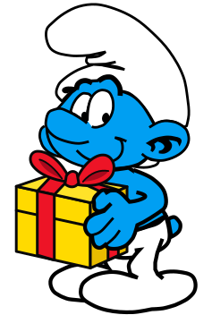

Le Schtroumpf farceur a les mêmes aptitudes qu'un schtroumpf ordinaire, mais il préfère employer son temps libre à préparer des surprises. Il peut donc accomplir les tâches communes du village et préparer ses farces pendant les moments d'attente.